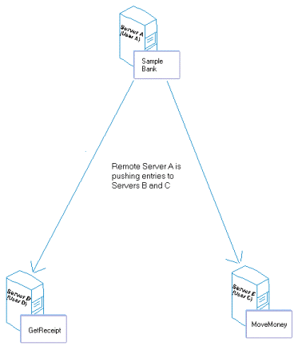
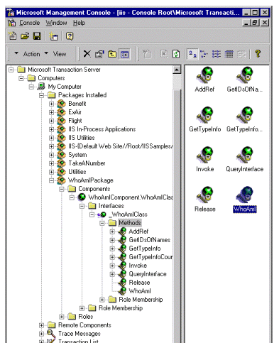
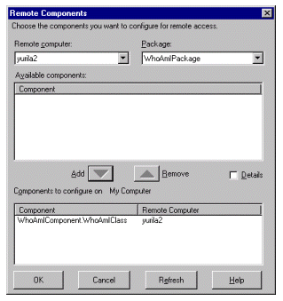
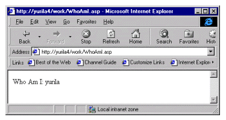

|
| ||
|
| ||
Yuri Lausberg
Microsoft Corporation
January 4, 1999
Contents
Introduction
Requirements
MTS Packages
On the Local Machine
On the Remote Machine
Creating the ASP File
Further Information
It may be necessary to have your in-process COM components run on a different server than Microsoft® Internet Information Server (IIS), using Active Server Pages (ASP) technology to create an instance of your object and execute your application. An example of this would be the creation of a distributed (n-tier) environment in which you separate your components from the main Web server, therefore making your application scalable while taking system load off the main Web server.
In this article, I would like to present a solution for managing your in-process COM components, using Microsoft Transaction Server (MTS), a sample Microsoft Visual Basic® component, and ASP technology. We will take advantage of an n-tier architecture on two different servers running MTS. One server will host the in-process COM components under MTS, while the other server will run IIS to handle the incoming HTTP requests.
An MTS component is a type of COM component that executes in the MTS run-time environment. In addition to the COM requirements, MTS requires that the component be a dynamic-link library (DLL). Components that are implemented as executable files (.exe files) cannot execute in the MTS run-time environment. For example, if you build a Remote Automation server executable file, you must rebuild it as a DLL.
Exercise caution when registering a standard COM component (one developed without regard to MTS) to execute under MTS control.
First, ensure that references are safely passed between contexts.
Second, if the component uses other components, consider running them under MTS. Rewrite the code for creating objects in these components to use CreateInstance.
You can call MTS components from ASP files. You can create an MTS object from an ASP file by calling Server.CreateObject. Note that if the MTS component has implemented the OnStartPage and OnEndPage methods, the OnStartPage method is called at this time.
You can run your MTS components in-process with IIS, but be aware that if MTS encounters an unexpected internal error condition or an unhandled application error, such as a general-protection fault inside a component method call, it immediately results in a failfast, thus terminating the process and IIS.
If both the server and client computer are running MTS, you can distribute a package by "pulling" and "pushing" components between one or more computers. Pushing components means creating remote component entries on remote computers. Once the remote component entries are created, you have to add those component entries to your Remote Components folder on your local machine (pull the components).
The following diagram illustrates pushing and pulling components to configure a remote computer running MTS.
You can push and pull components only if a shared network directory has been established for storage and delivery of DLLs and type library files. (You can choose any shared directory as long as the component files are contained within one of the folders or subfolders of the shared directory.) The MTS Explorer will automatically locate available shared network directories on servers. On a given server you can have multiple shared directories to access different sets of component files.

Figure 1.
Before MTS can host an in-process component in its process space, it needs to have a package created. The package, which can easily be created in the MTS Explorer, is a collection of components that run in the same process.
Creating packages is the final step in the development process. Package developers and advanced system and Web administrators use the MTS Explorer to create and deploy packages. You use the Explorer to implement the package and component configuration that is determined during development of the application.
Packages define the boundaries for a server process running on a server computer. For example, if you group a sales component and a purchasing component in two different packages, these two components will run in separate processes with process isolation. Therefore, if one of the server processes terminates unexpectedly (such as an application fatal error), the other package can continue to execute in its separate process.
A big advantage of using MTS packages is that you can specify a package identity, and all the components contained in the same package will use that identity when accessing and launching its components. This is very useful when the authenticated user (e.g., anonymous) does not have sufficient permissions to access and launch certain components.
We wrote an ActiveX DLL with Visual Basic, using the following class and one method that returns the user context by calling the GetUserName API:
Private Declare Function GetUserName Lib "advapi32.dll" Alias "GetUserNameA" (ByVal lpBuffer As String, nSize As Long) As Long Public Function WhoAmI() As String Dim sBuff$ Dim lConst& Dim lRet& Dim sName As String lConst& = 199 sBuff$ = Space$(200) lRet& = GetUserName(sBuff$, lConst&) WhoAmI = Trim$(Left$(sBuff$, lConst&)) End Function
After compiling and registering the component on the local machine, we need to create an empty package to host the remote component within the MTS Explorer.
To create an empty package
Figure 2.
The default selection for package identity is Interactive User. The interactive user is the user that logged on to the server computer on which the package is running. If nobody is logged on to that server computer, any requests to execute this package will fail, therefore it is recommended to specify a different user. You can select a different user by selecting the This user option and entering a specific Windows NT user or group.
In many deployment scenarios, it is preferable to run a package as a Windows NT user account. If a package runs as a single Windows NT user account, you can configure database access for that account rather than for every client that uses the package. Permitting access to accounts rather than individual clients improves the scalability of your application.
When you would like to access network resources within the same Windows NT domain, you'll need to specify an existing Windows NT domain user account; otherwise, you'll have to copy the local Windows NT user account onto the each network resource you'd like to access.
By defining an identity, you are able to change user context between the user making the request and the user running the component. This way you can overcome the "double-hop" problem when using NTLM Authentication on the server.
Once the local component entries are created, you have to add those component entries to your Remote Components folder on your remote machine (pull the components).
To add remote components, you must first add the appropriate computer or computers to your MTS Explorer and then add your components to the remote computer's Remote Components folder.
Be sure that the remote components you want to add to your server are not already registered on that server. This usually happens when you're migrating from a centralized environment using only one server to a distributed environment using multiple servers. You can easily unregister existing components by using the regsvr32 command with the /u switch.
To add components to the remote computer's Remote Components folder
Figure 3.
Note When you add components that are stored on a remote computer, the required files are stored in the \install directory\remote directory. (The default MTS installation directory is \Program Files\MTS.)
Now that we have done all the necessary steps to register the component with MTS, we can write an ASP file with the following code written in Visual Basic Scripting Edition (VBScript):
<%@ Language=VBScript %>
<%
Set oWhoAmIObject = Server.CreateObject ("WhoAmIComponent.WhoAmIClass")
Response.Write "Who Am I: " & CStr(oWhoAmIObject.WhoAmI()) & " <BR>"
Set oWhoAmIObject = Nothing
%>
In this script we create an instance of our component using Server.CreateObject with the corresponding PROGID. You can find this PROGID in the MTS explorer under Remote Components. Now that we have created an instance of our object, we can call our method and write the results back to the client. We need to be sure that after usage of our object instance, we do our own clean up by setting the object to Nothing.
Note We are instantiating our object in Page Scope. Using Page Scope will prevent us from using more system resources than necessary; it will create and destroy the object within the running page, therefore releasing the used memory and threads. If you need to maintain state between HTTP requests, you should still use Page Scope to create instances of your objects, but store state information such as variables into Session Scope. Another alternative to maintain state is to store variables in hidden form fields.
The last thing we need to do is to save this ASP file to the virtual directory on the IIS machine. We're now able to execute this ASP file from a browser, as shown in Figure 4.

Figure 4. The ASP file as viewed in a browser.
Our request is being executed on the IIS machine, which in turn will make a request to MTS to create an instance of our object. Since MTS has this component registered as a remote component it will call the MTS package running on our local server, which will load the requested DLL into its memory space, create an instance of the requested object, and have the ASP code execute methods on it. Finally, we release our object instance, and we have finished our page.
For other references on this topic, see the Microsoft Knowledge Base articles "Frequently Asked Questions for Transaction Server,"  especially Q185184, "INFO: Components That Do Not Support Transactions."
especially Q185184, "INFO: Components That Do Not Support Transactions."  Also, check out the MSDN Online Web Workshop article "Authentication and Security for Internet Developers," by Scott Stabbert.
Also, check out the MSDN Online Web Workshop article "Authentication and Security for Internet Developers," by Scott Stabbert.
Yuri Lausberg, a.k.a. our man from Amsterdam, drinks vanilla lattes, plays Gauntlet and foosball all day, and occasionally does his job in Microsoft Developer Support on the ASP/COM and WebClass Escalation teams.
Did you find this material useful? Gripes? Compliments? Suggestions for other articles? Write us!
© 1999 Microsoft Corporation. All rights reserved. Terms of use.